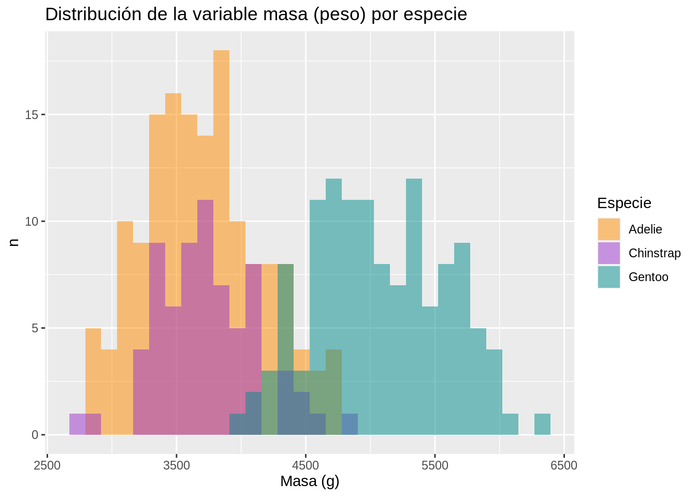

# Números (pueden ser enteros o decimales)
x <- 10
x
## [1] 10
# Hileras de caracteres (se delimitan entre comillas simples o dobles)
nombre <- 'Manuel'
nombre
## [1] "Manuel"
# Lógicos (Verdadero o Falso, TRUE o FALSE)
p <- 1 > 2
p
## [1] FALSE
# Vectores (pueden contener elementos de cualquier tipo de datos)
dias <- c('Domingo', 'Lunes', 'Martes', 'Miércoles', 'Jueves', 'Viernes', 'Sábado')
dias
## [1] "Domingo" "Lunes" "Martes" "Miércoles" "Jueves" "Viernes"
## [7] "Sábado"4 R
4.1 Resumen
R es un lenguaje de programación enfocado en análisis estadístico. En este capítulo, se explica la sintaxis básica del lenguaje y como bloques de código en R, y sus salidas, pueden ser incluídos en documentos Quarto.
4.2 Trabajo previo
4.2.1 Instalación de software
Para la edición de código en R, se recomienda instalar:
- Sistema base del lenguaje R
- RStudio Desktop (la versión v2022.07 y superiores son las cuales cuentan con los componentes necesarios para trabajar con Quarto)
Si se va a trabajar con datos geoespaciales, es conveniente contar con un sistema de información geográfica de escritorio, como QGIS.
4.3 El lenguaje de programación R
R es un lenguaje de programación enfocado en análisis estadístico. Es ampliamente utilizado en diversas áreas de investigación, entre las que pueden mencionarse ciencia de datos (data science), big data y aprendizaje automático (machine learning). Fue creado por Ross Ihaka y Robert Gentleman en la Universidad de Auckland, Nueva Zelanda, en 1993.
R es un proyecto de software libre que se comparte mediante una licencia GNU General Public Licence (GNU GPL). Esta característica permite que la funcionalidad original de R pueda ser ampliada mediante bibliotecas o paquetes desarrollados por la comunidad de programadores.
Para programar en R, puede utilizarse una interfaz de línea de comandos, editores de texto (ej. Visual Studio Code, Vim) y también ambientes de desarrollo integrados (IDE, integrated development environment) como Jupyter o RStudio.
4.3.1 Tipos de datos y variables
R puede trabajar con varios tipos de datos básicos, entre los que están números, caracteres (i.e. textos), lógicos, vectores y matrices. También puede trabajar con tipos compuestos, como factores y data frames.
En la memoria de una computadora, los datos se almacenan en variables. Una variable puede considerarse como una etiqueta que se le asigna a un dato. Hay muchas formas de crear variables en R. Una de las más sencillas es con los operadores de asignación. Estos son = y <- (o ->). Por ejemplo, las siguientes sentencias crean variables de varios tipos de datos simples.
Un tipo de datos fundamental para el análisis de datos en R, es el data frame. Es una estructura bidimensional similar a lo que comúnmente se conoce como una tabla. Sus filas corresponden a las observaciones de un conjunto de datos y sus columnas a las variables. Los data frames implementan un conjunto de funciones similares a las de una hoja electrónica o una tabla de una base de datos relacional.
R cuenta con una gran cantidad de funciones para manejar data frames y también con varios conjuntos de datos, implementados como data frames, los cuales se instalan con la distribución base de R.
# Información sobre todos los conjuntos de datos incorporados en la distribución base de R
data()
# Información sobre el cojunto de datos cars
?cars
# Despliegue de los datos de cars
View(cars)
# Información sobre el cojunto de datos mtcars
?mtcars
# Despliegue de los datos de mtcars
View(mtcars)
# Información sobre el cojunto de datos iris
?iris
# Despliegue de los datos de iris
View(iris)La función read.csv() permite leer datos de un archivo de valores separados por comas (CSV), el cual puede estar en una ubicación local o remota.
# Lectura de archivo CSV ubicado en la Web
especies_mamiferos_cr <-
read.csv(
"https://raw.githubusercontent.com/mesa-monitoreo-puntos/capacitacion/main/datos/especies-mamiferos-cr.csv"
)
# Desplegue de los datos
View(especies_mamiferos_cr)Ejercicio
- Descargue en su computadora el archivo https://raw.githubusercontent.com/mesa-monitoreo-puntos/capacitacion/main/datos/registros-mamiferos-cr.csv, cárguelo en un data frame y despliegue sus datos.
4.3.2 Funciones
R estructura un programa en unidades de código fuente llamadas funciones. Cada función realiza una tarea específica como, por ejemplo, un cálculo matemático y, por lo general, retorna un valor como salida. Todas las funciones tienen un nombre y, opcionalmente, un conjunto de argumentos que especifican los datos de entrada que procesa la función. Los argumentos se escriben entre paréntesis redondos (()) y estos siempre deben incluirse, aún en el caso de que la función no tenga ningún argumento. Si la función tiene varios argumentos, deben separarse mediante comas (,).
# Impresión de una hilera de caracteres
print("Hola mundo")[1] "Hola mundo"# Cálculo de la media aritmética
mean(c(2, 4, 5, 9))[1] 54.3.3 Paquetes
Las funciones de R se distribuyen en paquetes. Cada paquete contiene un conjunto de funciones y estructuras de datos relacionadas entre sí. También hay paquetes que contienen datos.
Para utilizar un paquete, primero debe cargarse (en la memoria del computador) con la función library().
# Carga del paquete stats
library(stats)Algunos paquetes están contenidos en la distribución base de R. Otros deben instalarse con la función install.packages().
En el siguiente ejemplo, se instala el paquete palmerpenguins.
# Instalación del paquete palmerpenguins (note las comillas)
install.packages("palmerpenguins")
# Carga del paquete palmerpenguins
library(palmerpenguins)4.3.4 Tidyverse
4.3.4.1 Descripción general
Tidyverse es una colección de paquetes de R enfocados en ciencia de datos, una discipina que permite convertir datos no procesados en entendimiento, comprensión y conocimiento.
La Figure 4.1 ilustra el modelo de un proyecto típico de ciencia de datos, el cual incluye los procesos de importar, organizar, transformar, visualizar, modelar y comunicar.

Los paquetes de Tidyverse comparten filosofía de diseño, gramática y estructuras de datos para apoyar estos procesos del modelo de ciencia de datos.
4.3.4.2 Paquetes
El núcleo de Tidyverse está compuesto por ocho paquetes base, los cuales proveen las funcionalidades utilizadas más frecuentemente en análisis de datos:
- ggplot2: sistema para la creación declarativa de gráficos, basado en el libro The Grammar of Graphics, de Wilkinson et al..
- dplyr: gramática para la manipulación de datos que proporciona un conjunto consistente de “verbos” que resulven los retos más comunes de manipulación de datos.
- tidyr: conjunto de funciones para organizar (to tidy) datos, colocando las observaciones, variables y valores en filas, columnas y celdas de estructuras rectangulares.
- readr: conjunto de funciones para cargar datos de estructuras rectangulares (ej. archivos CSV) en memoria.
- purr: conjunto de herramientas de programación funcional para trabajar con funciones y vectores.
- tibble: un tibble es una redefinición del concepto de data frame, para hacerlos más eficientes y fáciles de usar.
- stringr: colección de funciones para facilitar el trabajo con hileras de caracteres.
- forcats: colección de funciones para facilitar el trabajo con factores.
Hay otros paquetes para tareas más especifícas relacionadas con importación, limpieza y modelado de datos, entre otras. Los paquetes de Tidyverse son de los más descargados, entre la totalidad de paquetes del lenguaje de programación R.
4.3.4.3 Instalación y carga
Los paquetes de Tidyverse pueden instalarse de manera conjunta o individualmente con la función install.packages():
# Instalación conjunta
install.packages("tidyverse")
# Instalación de paquetes individuales
install.packages("ggplot2")
install.packages("dplyr")Una vez instalados, los paquetes también pueden cargarse conjunta o separadamente con la función library():
# Carga conjunta
library(tidyverse)
# Carga de paquetes individuales
library(ggplot2)
library(dplyr)4.3.5 El conjunto de datos palmerpenguins
palmerpenguins es un paquete de datos de R ampliamente utilizado para ejemplificar funciones de exploración y visualización, como las de Tidyverse. Contiene 344 observaciones de pingüinos de tres especies, las cuales habitan en tres islas del archipiélago Palmer, en la Antártida. Para cada individuo se registraron variables como especie, sexo, masa (peso), longitud de la aleta (flipper), longitud del pico (bill) y profundidad del pico, entre otras.
palmerpenguins puede instalarse con la función install.packages() y cargarse con la función library().
El paquete contiene dos conjuntos de datos:
- penguins_raw: datos sin procesar.
- penguins: subconjunto curado de los datos sin procesar.
palmerpinguins se utiliza en este capítulo para ejemplificar varias de las funcionalidades de Tidyverse.
4.4 Ejemplos de visualizaciones de datos
Se presentan ejemplos de visualizaciones generadas con R en formato de tablas, gráficos y mapas.
Se cargan los paquetes dplyr, para manipulación de datos, y palmerpenguins como conjunto de datos de ejemplo.
# Carga de dplyr
library(dplyr)
# Carga de palmerpenguins
library(palmerpenguins)4.4.1 Tablas
Hay varios paquetes de R para hacer tablas. Uno de estos es el paquete DT.
# Instalación de DT
install.packages("DT")# Carga de DT
library(DT)La siguiente tabla muestra algunas de las columnas del conjunto de datos palmerpenguins. Note el uso del operador pipe (|>) para pasar datos entre procesos.
penguins |> # datos
select(species, sex, body_mass_g) |> # selección de columnas
arrange(species, sex, body_mass_g) |> # ordenamiento
datatable(
colnames = c("Especie", "Sexo", "Peso"),
options = list(
pageLength = 5,
language = list(url = '//cdn.datatables.net/plug-ins/1.10.11/i18n/Spanish.json')
),
rownames= FALSE
)Ejercicios
- Con base en el bloque de código anterior, genere una tabla que muestre la especie, la longitud del pico y la longitud de la aleta de cada pingüino, ordenada por longitud del pico.
- Repita el ejercicio anterior, solo para los pingüinos machos. (Sugerencia: use la función
filter()dedplyr).
4.4.2 Gráficos
Se ejemplifican varios tipos de gráficos estadísticos generados con la función ‘ggplot()’ del paquete ggplot2 de Tidyverse, para el conjunto de datos palmerpenguins.
# Instalación de ggplot2
install.packages("ggplot2")# Carga de ggplot2
library(ggplot2)4.4.2.1 Gráficos de dispersión (scatter plots)
Este tipo de gráficos muestra relaciones entre variables numéricas.
# Gráfico de dispersión de longitud del pico vs masa (peso)
penguins |> # datos
ggplot(aes(x = bill_length_mm, y = body_mass_g)) + # mapeo de variables estéticas
geom_point(size = 2) + # geometría
geom_smooth(method = "lm", se = FALSE) +
ggtitle("Longitud del pico vs. masa") +
xlab("Longitud del pico (mm)") +
ylab("Masa (g)") +
labs(color = "Especie", shape = "Especie")
# Gráfico de dispersión de longitud del pico vs masa (peso) por especie
penguins |>
ggplot(aes(x = bill_length_mm, y = body_mass_g)) +
geom_point(aes(color = species,
shape = species),
size = 2) +
geom_smooth(method = "lm", se = FALSE, aes(color = species)) +
scale_color_manual(values = c("darkorange", "darkorchid", "cyan4")) +
ggtitle("Longitud del pico vs. masa por especie") +
xlab("Longitud del pico (mm)") +
ylab("Masa (g)") +
labs(color = "Especie", shape = "Especie")Ejercicios
- Genere un gráfico de dispersión que muestre la relación entre la longitud de la aleta y el peso de todos los pingüinos del conjunto de datos.
- Repita el ejercicio anterior, pero agrúpelo por sexo.
4.4.2.2 Histogramas
Este tipo de gráficos muestra distribuciones de variables numéricas.
# Distribución de la variable de masa (peso)
penguins |>
ggplot(aes(x = body_mass_g)) +
geom_histogram() +
ggtitle("Distribución de la variable masa (peso)") +
xlab("Masa (g)") +
ylab("n")
# Distribución de la variable de masa (peso) por especie
penguins |>
ggplot(aes(x = body_mass_g)) +
geom_histogram(aes(fill = species), alpha = 0.5, position = "identity") +
scale_fill_manual(values = c("darkorange", "darkorchid", "cyan4")) +
ggtitle("Distribución de la variable masa (peso) por especie") +
xlab("Masa (g)") +
ylab("n") +
labs(fill = "Especie")
Ejercicios
- Genere un histograma que muestre la distribución de la longitud del pico para todos los pingüinos del conjunto de datos.
- Repita el ejercicio anterior, pero agrúpelo por sexo.
4.4.2.3 Diagramas de caja
Este tipo de gráficos muestra información de una variable numérica a través de su mediana, sus cuartiles y sus valores atípicos.
# Diagrama de caja de la variable masa (peso)
penguins |>
ggplot(aes(y = body_mass_g)) +
geom_boxplot() +
ylab("Masa (g)")
# Diagrama de caja de la variable masa (peso) por especie
penguins |>
ggplot(aes(x = species, y = body_mass_g)) +
geom_boxplot(aes(color = species), width = 0.3, show.legend = FALSE) +
scale_color_manual(values = c("darkorange", "purple", "cyan4")) +
xlab("Especie") +
ylab("Masa (g)")
4.4.3 Mapas
Hay varios paquetes de R para datos geoespaciales. Entre estos, están sf, para manejar datos vectoriales, y leaflet, para generar mapas para la Web.
# Instalación de sf
install.packages("sf")
# Instalación de leaflet
install.packages("leaflet")# Carga de sf
library(sf)
# Carga de leaflet
library(leaflet)El siguiente mapa muestra los registros de presencia en Costa Rica de la especie Puma concolor.
# Lectura de un archivo CSV con registros de presencia
registros <-
st_read(
"https://raw.githubusercontent.com/mesa-monitoreo-puntos/capacitacion/main/datos/registros-mamiferos-cr.csv",
options = c(
"X_POSSIBLE_NAMES=decimalLongitude", # columna de longitud decimal
"Y_POSSIBLE_NAMES=decimalLatitude" # columna de latitud decimal
),
quiet = TRUE
)
# Filtro por especie
registros <-
registros |>
filter(species == "Puma concolor")
# Mapa
leaflet() |>
setView(# centro y nivel inicial de acercamiento
lng = -84.19452,
lat = 9.572735,
zoom = 7) |>
addTiles(group = "OpenStreetMap") |> # capa base de OSM |>
addCircleMarkers(
# capa de registros de presencia (puntos)
data = registros,
stroke = F,
radius = 4,
fillColor = 'blue',
fillOpacity = 1,
group = "Puma concolor",
popup = paste(
paste0("<strong>Especie: </strong>", registros$species),
paste0("<strong>Localidad: </strong>", registros$locality),
paste0("<strong>Fuente: </strong>", registros$institutionCode),
sep = '<br/>'
)
) |>
addLayersControl(
baseGroups = c("OpenStreetMap"),
overlayGroups = c("Puma concolor")) |> # control de capas
addScaleBar(position = "bottomleft", options = scaleBarOptions(imperial = FALSE)) |> # barra de escala
addMiniMap(position = "bottomleft") # mapa de ubicación4.5 Integración de código R en documentos Quarto
En Quarto, los bloques (chunks) de código fuente se delimitan con tres backticks, tanto al inicio como al final del bloque. Los bloques en R se identifican con {r} y se configuran con diferentes opciones que inician con #|. Los bloques de otros lenguajes de programación se identifican con {python} y {julia}, por ejemplo.
El siguiente es un bloque de código en R y su salida.
```{r}
#| label: graficacion-cars
#| include: true
#| echo: true
plot(
x = cars$speed,
y = cars$dist,
main = "Velocidad vs distancia de frenado",
xlab = "Velocidad (mph)",
ylab = "Distancia (pies)"
)
```
La opción label se utiliza para etiquetar el bloque. La de include para especificar si se desea que el bloque y sus resultados se incluyan en el documento de salida. Por su parte, echo indica si el código fuente debe desplegarse o no.
4.6 Ejercicios
- Desarrolle un documento Quarto con datos de una familia de mamíferos de Costa Rica. Incluya:
- Una tabla con registros de presencia.
- Un gráfico con cantidades de registros por especie.
- Un mapa de distribución.
- Publique el documento como un sitio en GitHub Pages.